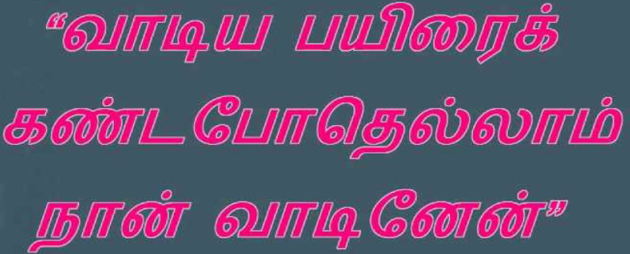

குறள்:
சுழன்றும்ஏர்ப் பின்னது உலகம் அதனால்
உழந்தும் உழவே தலை.
குறள் விளக்கம்:
பல தொழில்களைச் செய்து சுழன்று கொண்டிருக்கும் இந்த உலகம், ஏர்த்தொழிலின் பின்னேதான் சுற்ற வேண்டியிருக்கிறது. எனவே எவ்வளவுதான் துன்பம் இருப்பினும் உழவுத் தொழிலே சிறந்தது..
